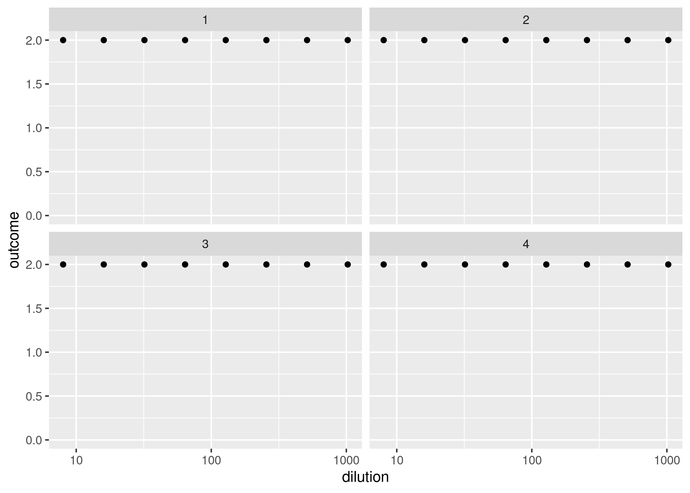

bayesianTiterCalc is a Bayesian inference method that calculates a serum sample’s antibody concentration and titer based on data from a standard neutralization assay. The method uses a logistic function in a statistical model to simulate mortality in cell culture as a function of antibody concentration. Given the limited information per sample that’s inherent in the experimental design of neutralization assays (number of replicates per dilution and number of dilutions), the advantage of Bayesian inference here is the use of probability distributions to incorporate uncertainty in the outcome.
Installation
You can install the development version of bayesianTiterCalc from GitHub with:
# install.packages("devtools")
devtools::install_github("ekamau/bayesianTiterCalc")Usage
Example of data simulation: 30 serum samples with two replicates per dilution point.
library(bayesianTiterCalc)
ndraws = 30; a = 8.5; b = 2.5; prior_phi <- list(lower = 0.75, upper = 16)
dilutions <- 2^c(3, 4, 5, 6, 7, 8, 9, 10); nreplicates_per_dilution = 2
simData <- sample_dose_response(ndraws, prior_phi, a, b, dilutions, nreplicates_per_dilution)
head(simData)
#> # A tibble: 6 × 5
#> dilution number_surviving number_replicates draw phiValue
#> <dbl> <int> <dbl> <int> <dbl>
#> 1 8 2 2 1 13.0
#> 2 16 2 2 1 13.0
#> 3 32 2 2 1 13.0
#> 4 64 2 2 1 13.0
#> 5 128 2 2 1 13.0
#> 6 256 2 2 1 13.0
table(simData$number_surviving)
#>
#> 2
#> 240The function ‘sample_dose_response’ samples from a uniform distribution {a, b} and calls the ‘simulate_dose_response’ function.
Plot four simulated samples to see how they look like and if they resemble the actual data:
library(tidyverse)
simData %>%
filter(.data$draw %in% 1:4) %>%
group_by(.data$draw, .data$dilution) %>%
summarise(outcome = .data$number_surviving) %>%
ggplot(aes(x = .data$dilution, y = .data$outcome)) +
geom_point() +
scale_x_log10() +
ylim(0, 2) +
facet_wrap(~ .data$draw)
Check if simulated data is non monotonic, i.e., mortality of cell cultures increases with higher serum dilutions. Non-monotonic data would show ‘accidental’ death or survival of cell cultures in between dilution levels. In the table output, ‘0’ and ‘1’ represents monotonic and non-monotonic data points, respectively.
non_monotone <- simData %>%
group_by(simData$draw) %>%
summarise(is_non_monotone = non_monotonic(simData$number_surviving))
table(non_monotone$is_non_monotone)
#>
#> 0
#> 30Model fitting:
stan_data = list(N = nrow(simData),
nreplicates = rep(nreplicates_per_dilution, nrow(simData)),
survival = simData$number_surviving,
dilution = simData$dilution,
nsample = max(simData$draw),
sample = simData$draw,
is_log = 1)
fit <- sampling_stan(standata = stan_data, chains=4, iter = 1000, init = 'random')Summarize the model fitted data:
You’ll still need to render README.Rmd regularly, to keep README.md up-to-date. devtools::build_readme() is handy for this. You could also use GitHub Actions to re-render README.Rmd every time you push. An example workflow can be found here: https://github.com/r-lib/actions/tree/v1/examples.
In that case, don’t forget to commit and push the resulting figure files, so they display on GitHub and CRAN.